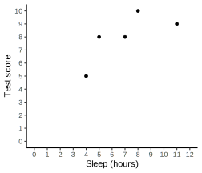

19|CORRELATION

Overview
Correlational research designs
- Correlational designs versus experimental designs
- No independent variable
- Measure two (or more) variables per participant
- Examine relationship between variables
- Example research questions
- Is income related to happiness?
- Does practice make perfect?
- Class attendance & final grades
Limitations of correlation
- Correlations are not usually useful for demonstrating causation
- Establishing causation requires experiments in which something is manipulated
- E.g. coffee consumption & intelligence
- Perhaps…
- A causes B
- B causes A
- Something else (C) causes A and B
- Perhaps…
Corley, J., et al. (2010). Caffeine consumption and cognitive function at age 70: The Lothian Birth Cohort 1936 study. Psychosomatic medicine 72(2), 206-214. https://doi.org/10.1097/PSY.0b013e3181c92a9c
Correlation statistic
- Correlation coefficient
- A number quantifying the association between two variables
- Three characteristics
- Strength or consistency (varies from 0 to 1)
- Direction (negative or positive)
- Form (e.g. linear)
- Characteristics are independent
- Can be positive & weak, negative & strong, etc


Logic
| Participant | Sleep | Score |
|---|---|---|
| A | 4 | 5 |
| B | 5 | 8 |
| C | 7 | 8 |
| D | 8 | 10 |
| E | 11 | 9 |

Pearson’s \(r\)
- Most widely used correlation statistic
- Measures the degree and the direction of the linear relationship between two variables
- Variability & covariability
- Variability: How much each variable varies
- Covariability: How much \(X\) and \(Y\) vary in tandem
- Are changes in \(X\) associated with corresponding changes in \(Y\)?
- E.g. as \(X\) increases, \(Y\) tends to increase (positive)
- Or, as \(X\) increases, \(Y\) tends to decrease (negative)
Pearson’s \(r\)
\(r = \dfrac{SP}{\sqrt{SS_X SS_Y}} = \dfrac{\textrm{covariability of X and Y}}{\textrm{variability of X and Y separately}}\)
- Perfect linear relationship…
- If every change in \(X\) has a corresponding change in \(Y\), variability separately = covariability
- Correlation will be \(–1.00\) or \(+1.00\)
Hypothesis test
Step 1. State hypotheses
Correlation coefficient \(r\) is computed for sample data
Hypotheses concerns relationship in the population
Greek letter \(\rho\) (rho) represents population correlation
Non-directional:
- \(H_0: \rho = 0\)
- \(H_1: \rho \ne 0\)
Directional:
- \(H_0: \rho \le 0\); \(H_1: ρ > 0\)
- Or…
- \(H_0: \rho \ge 0\); \(H_1: \rho < 0\)
Step 2. Critical region
- Critical value for \(r\) is a type of \(t\) statistic
- \(df = n - 2\)
Proportion in 1 tail |
0.1 |
0.05 |
0.025 |
0.01 |
0.005 |
|---|---|---|---|---|---|
| Proportion in 2 tails |
0.2 | 0.1 | 0.05 | 0.02 | 0.01 |
| 1 | 3.078 | 6.314 | 12.706 | 31.821 | 63.657 |
| 2 | 1.886 | 2.920 | 4.303 | 6.965 | 9.925 |
| 3 | 1.638 | 2.353 | 3.182 | 4.541 | 5.841 |
| 4 | 1.533 | 2.132 | 2.776 | 3.747 | 4.604 |
| 5 | 1.476 | 2.015 | 2.571 | 3.365 | 4.032 |
| 6 | 1.440 | 1.943 | 2.447 | 3.143 | 3.707 |
| 7 | 1.415 | 1.895 | 2.365 | 2.998 | 3.499 |
| \(df\) 8 | 1.397 | 1.860 | 2.306 | 2.896 | 3.355 |
| 9 | 1.383 | 1.833 | 2.262 | 2.821 | 3.250 |
| 10 | 1.372 | 1.812 | 2.228 | 2.764 | 3.169 |
| 11 | 1.363 | 1.796 | 2.201 | 2.718 | 3.106 |
| 12 | 1.356 | 1.782 | 2.179 | 2.681 | 3.055 |
| 13 | 1.350 | 1.771 | 2.160 | 2.650 | 3.012 |
| 14 | 1.345 | 1.761 | 2.145 | 2.624 | 2.977 |
| 15 | 1.341 | 1.753 | 2.131 | 2.602 | 2.947 |
| ... | ... | ... | ... | ... | ... |
Step 3. Calculate statistic
\(r = \dfrac{SP}{\sqrt{SS_X SS_Y}}\)
- Numerator: Sum of Products, \(SP\)
- Multiply deviations by one another
Definitional formula
\(SP = \Sigma(X - M_X)(Y - M_Y)\)
- Denominator: Sum of Squares, \(SS\)
- Multiply deviations by themselves
Definitional formula
\[\begin{align} SS &= \Sigma(X - M_X)^2 \\ &= \Sigma(X - M_X)(X - M_X) \end{align}\]
Computational formula
\(SP = \Sigma XY - \dfrac{\Sigma X \Sigma Y}{n}\)
Computational formula
\[\begin{align} SS &= \Sigma X^2 - \dfrac{(\Sigma X)^2}{n}\\ &= \Sigma X X - \dfrac{(\Sigma X)(\Sigma X)}{n} \end{align}\]
Calculating \(r\)
| \(X\) | \(X-M_X\) | \((X-M_X)^2\) | \(Y\) | \(Y-M_Y\) | \((Y-M_Y)^2\) | \(P\) |
|---|---|---|---|---|---|---|
| 4 | -3 | 9 | 5 | -3 | 9 | 9 |
| 5 | -2 | 4 | 8 | 0 | 0 | 0 |
| 7 | 0 | 0 | 8 | 0 | 0 | 0 |
| 8 | 1 | 1 | 10 | 2 | 4 | 2 |
| 11 | 4 | 16 | 9 | 1 | 1 | 4 |
| \(M_X = 7.00\) | \(SS_X = 30.00\) | \(M_Y = 8.00\) | \(SS_Y = 14.00\) | \(SP = 15.00\) | ||
| \(s^2_X = 7.50\) | \(s^2_Y = 3.50\) | |||||
| \(s_X = 2.74\) | \(s_Y = 1.87\) |
\(r = \dfrac{SP}{\sqrt{SS_X SS_Y}}\)
Calculating \(r\)
| \(X\) | \(X-M_X\) | \((X-M_X)^2\) | \(Y\) | \(Y-M_Y\) | \((Y-M_Y)^2\) | \(P\) |
|---|---|---|---|---|---|---|
| 4 | -3 | 9 | 5 | -3 | 9 | 9 |
| 5 | -2 | 4 | 8 | 0 | 0 | 0 |
| 7 | 0 | 0 | 8 | 0 | 0 | 0 |
| 8 | 1 | 1 | 10 | 2 | 4 | 2 |
| 11 | 4 | 16 | 9 | 1 | 1 | 4 |
| \(M_X = 7.00\) | \(SS_X = 30.00\) | \(M_Y = 8.00\) | \(SS_Y = 14.00\) | \(SP = 15.00\) | ||
| \(s^2_X = 7.50\) | \(s^2_Y = 3.50\) | |||||
| \(s_X = 2.74\) | \(s_Y = 1.87\) |
\(r = \dfrac{SP}{\sqrt{SS_X SS_Y}}\)
Calculating \(r\)
| \(X\) | \(X-M_X\) | \((X-M_X)^2\) | \(Y\) | \(Y-M_Y\) | \((Y-M_Y)^2\) | \(P\) |
|---|---|---|---|---|---|---|
| 4 | -3 | 9 | 5 | -3 | 9 | 9 |
| 5 | -2 | 4 | 8 | 0 | 0 | 0 |
| 7 | 0 | 0 | 8 | 0 | 0 | 0 |
| 8 | 1 | 1 | 10 | 2 | 4 | 2 |
| 11 | 4 | 16 | 9 | 1 | 1 | 4 |
| \(M_X = 7.00\) | \(SS_X = 30.00\) | \(M_Y = 8.00\) | \(SS_Y = 14.00\) | \(SP = 15.00\) | ||
| \(s^2_X = 7.50\) | \(s^2_Y = 3.50\) | |||||
| \(s_X = 2.74\) | \(s_Y = 1.87\) |
\(r = \dfrac{SP}{\sqrt{SS_X SS_Y}} = \dfrac{15}{\sqrt{30*14}} = 0.73\)
Calculating \(r\): computation approach
| \(X\) | \(X^2\) | \(Y\) | \(Y^2\) | \(XY\) |
|---|---|---|---|---|
| 4 | 16 | 5 | 25 | 20 |
| 5 | 25 | 8 | 64 | 40 |
| 7 | 49 | 8 | 64 | 56 |
| 8 | 64 | 10 | 100 | 80 |
| 11 | 121 | 9 | 81 | 99 |
| \(\Sigma X = 35\) | \(\Sigma X^2 = 275\) | \(\Sigma Y = 40\) | \(\Sigma Y^2 = 334\) | \(\Sigma XY = 295\) |
\(SS_X = \Sigma X^2 - \dfrac{(\Sigma X)^2}{n} = 275 - \dfrac{35^2}{5} = 30\)
\(SS_Y = \Sigma Y^2 - \dfrac{(\Sigma Y)^2}{n} = 334 - \dfrac{40^2}{5} = 14\)
\(SP = \Sigma XY - \dfrac{\Sigma X \Sigma Y}{n} = 295 - \dfrac{35 \cdot 40}{5} = 15\)
\(r = \dfrac{SP}{\sqrt{SS_X SS_Y}} = \dfrac{15}{\sqrt{30 \cdot 14}} = 0.73\)
Step 4. Make decision
- Hypothesis test for \(r\) is a type of \(t\) test
\(t = \dfrac{\text{sample statistic} - \text{population parameter}}{\text{standard error}}\)
\(t = \dfrac{r - \rho}{s_r}\)
\(s_r = \sqrt{\dfrac{1 - r^2}{n-2}}\)
\(t = \dfrac{0.73}{\sqrt{\dfrac{1-0.73^2}{5 - 2}}} = 1.86\)
Step 5. Report results
- Value of correlation, \(r\)
- \(df\) (or sample size)
- \(p\)-value or \(\alpha\) level
“More sleep was associated with higher test scores; however, the correlation did not reach statistical significance; \(r (3) = .73, p > .05\).”
Correlation & effect size
- Pearson’s \(r\) correlation coefficient is a standardized measure of effect size
- Quantifies degree of association on a scale from \(0\) to \(1\)
- Independent of sample size
- Related to \(r^2\)
- Even related to Cohen’s \(d\)
\(d = \dfrac{2r}{\sqrt{1-r^2}}\)
Interpreting effect size
Cohen (1977)
| \(d\) | \(r\) | Description |
|---|---|---|
| 0.3 | 0.1 | Small |
| 0.5 | 0.3 | Medium |
| 0.8 | 0.5 | Large |
Funder & Ozer (2019)
| \(d\) | \(r\) | Description |
|---|---|---|
| 0.10 | 0.05 | Very small for the explanation of single events but potentially consequential in longer run |
| 0.20 | 0.10 | Still small at the level of single events but potentially more ultimately consequential |
| 0.40 | 0.20 | Medium effect of some explanatory and practical use even in the short run |
| 0.60 | 0.30 | Large effect that is potentially powerful in both the short and the long run |
| 0.80 | 0.40 | A very large effect in the context of psychological research; likely to be a gross overestimate |
Funder, D. C., & Ozer, D. J. (2019). Evaluating Effect Size in Psychological Research: Sense and Nonsense. Advances in Methods and Practices in Psychological Science, 2(2), 156–168. https://doi.org/10.1177/2515245919847202
See also…
- https://www.rpsychologist.com/d3/correlation
- Interactive correlation visualization
Learning checks
- True/False
- The numerator of Pearson’s \(r\) cannot be negative
- The denominator of Pearson’s \(r\) cannot be negative
- In a non-directional significance test of a correlation, the null hypothesis states that the population correlation is zero